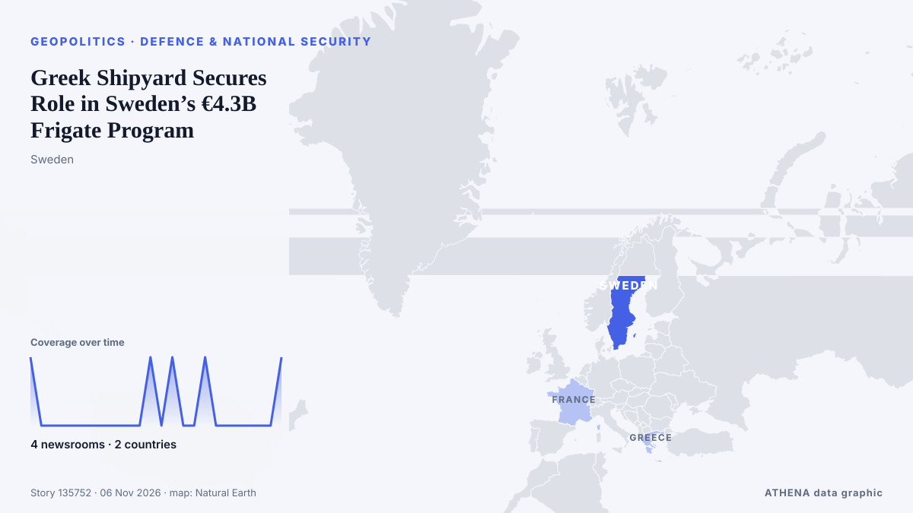

Verteidigung und Sicherheit
GesponsertPräsentiert von  Cybernetics and Artificial Intelligence Lab Welcome to the Cybernetics and Artificial Intelligence Laboratory, established at the Department of Business Administration of the National and Kapodistrian University of Athens. The lab is headed by Professor Dimitrios Thomakos. The lab aims to do research that can be published in top venues. Our research uses tools and methods of Artificial Intelligence, and lies in the following areas: - Forecasting - Decision making - Cyber security - Finance We are always looking forward to collaborating with exceptional students!
Cybernetics and Artificial Intelligence Lab Welcome to the Cybernetics and Artificial Intelligence Laboratory, established at the Department of Business Administration of the National and Kapodistrian University of Athens. The lab is headed by Professor Dimitrios Thomakos. The lab aims to do research that can be published in top venues. Our research uses tools and methods of Artificial Intelligence, and lies in the following areas: - Forecasting - Decision making - Cyber security - Finance We are always looking forward to collaborating with exceptional students!
| 24. Okt. | 0 |
|---|---|
| 25. Okt. | 0 |
| 26. Okt. | 0 |
| 27. Okt. | 0 |
| 28. Okt. | 0 |
| 29. Okt. | 0 |
| 30. Okt. | 1 |
| 31. Okt. | 0 |
| 1. Nov. | 0 |
| 2. Nov. | 4 |
| 3. Nov. | 8 |
| 4. Nov. | 3 |
| 5. Nov. | 6 |
| 6. Nov. | 2 |
Schlagzeilen werden auf Englisch angezeigt, wie veröffentlicht.

Greek Shipyard Secures Role in Sweden’s €4.3B Frigate Program
Salamina Shipyards has signed an agreement with France’s Naval Group to build pre-equipped sections for four Swedish FDI frigates, expanding its work beyond vessels ordered by the Greek and French… von to vima
N. Korea says Japan's push to raise defense spending will only burden its people
SEOUL, Nov. 6 (Yonhap) -- North Korea on Friday criticized Japan's push to incre... von Yonhap (English)
Naval Group hands over second Hellenic Navy FDI frigate
On October 30, in Lorient, Naval Group delivered the second FDI frigate for the Hellenic Navy (FDI HN), HSNearchos. von Naval Today
Ticking clock: Ireland's €31bn welfare bill, including €13bn for pensions, with low unemployment
With Social Protection spending approaching €31 billion, just how sustainable will the system be when the good times end? von TheJournal.ie
Democrats win governorships in Texas and other GOP-controlled states in rebuke to Republicans
The wins delivered a majority of governorships to Democrats for the first time in two decades, allowing them to put up a stronger defense against Trump's second-term agenda. von PBS NewsHour
Thailand bans textbook on national security grounds
The second edition of the 'Routledge Handbook of Contemporary Thailand' was edited by Japan-based academic and Thai monarchy critic Pavin Chachavalpongpun. von Free Malaysia Today
Fairbanks Morse Defense unveils AutoHook for Fully Autonomous Vessel Recovery at EURONAVAL 2026
Developed by FMD’s Vestdavit, the industry-first interface requires zero human intervention and is designed for interoperability among allied navies. von Cyprus Shipping News
Saudi, Syrian defence ministries sign cooperation agreement, SPA reports
CAIRO, Nov 4 - Saudi Arabia and Syria signed a cooperation agreement between the two countries' defense ministries on Wednesday, Saudi state news agency SPA reported, as Yemen's Iran-aligned Houthi… von The Straits Times
N. Korea says it test-fired new air defense missile system
SEOUL, Nov. 5 (Yonhap) -- North Korea said Thursday it test-fired a newly design... von Yonhap (English)
Israeli SPIKE Missiles for Cyprus National Guard – Boosting Deterrence Capabilities
NICOSIA – “For Cyprus, SPIKE missiles make a significant contribution to our overall deterrence capabilities,” Deputy Chief of the National Guard Neophytos Pachoulides said during a presentation of… von The National Herald
Defence min inks Rs 53,866cr deal with GRSE & GSL for 8 next-gen corvettes for Navy
The Indian Defence Ministry signed contracts with two shipyards for constructing eight next generation corvettes. von Times of India
N. Korea's Kim inspects Nampho shipyard, calls for rapid naval buildup
SEOUL, Nov. 4 (Yonhap) -- North Korean leader Kim Jong-un has visited the Nampho... von Yonhap (English)
Iran will not stand idle if US uses nuclear weapons, deputy FM warns
Iran’s Deputy Foreign Minister for Legal and International Affairs Kazem Gharibabadi warned that any decision to use nuclear weapons against Iran would have consequences far beyond the region. von AzerNews
Thyssenkrupp CEO says Canada submarine contest with Hanwha was 'very close'
Thyssenkrupp CEO Miguel Lopez acknowledged the fierce competition between its naval shipbuilding arm TKMS and South Korea’s Hanwha Ocean in Canada’s recent submarine procurement contest, while… von Korea Herald
Launch ceremony set for latest indigenously-built attack submarine
SEOUL, Nov. 3 (Yonhap) -- The Navy was set to hold a launching ceremony Tuesday ... von Yonhap (English)
Russian Defense Minister Hails ‘Unprecedented’ Beijing Ties on China Visit
Russian Defense Minister said Moscow’s strategic partnership with Beijing had reached an “unprecedentedly high level” during talks in China. von Kyiv Post
Hanwha names new president of US shipyard in Philadelphia amid expansion
South Korea's Hanwha Group has appointed a new president of its Philadelphia shipyard in the United States, as the conglomerate seeks to expand its U.S. naval shipbuilding operations, according to… von The Korea Times
US said to plan fresh NATO push for Ukraine arms deliveries
The US has even kept weapons flowing to Ukraine when allied funding has lagged behind the pace of US deliveries. von The Straits Times
US response to Iran’s demands was not convincing: Rezaei
Iranian security chief: US response to demands 'not convincing' The US response to Iran's demands was not convincing, Iran's security chief Mohsen Rezaei said in a post on X on Tuesday, adding that… von Middle East Eye